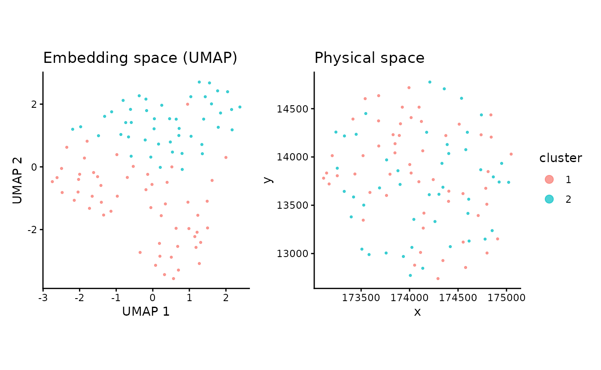

Running Nicheformer foundational model
06/27/2026
nicheformer.RmdAbstract
This package takes an h5ad file with the gene count matrix and spatial coordinates as input, runs Nicheformer, creating the Python environment automatically, and returns a matrix with the embeddings.
Loading the necessary packages to run Nicheformer in
R
## Loading required package: SingleCellExperiment## Loading required package: SummarizedExperiment## Loading required package: MatrixGenerics## Loading required package: matrixStats##
## Attaching package: 'MatrixGenerics'## The following objects are masked from 'package:matrixStats':
##
## colAlls, colAnyNAs, colAnys, colAvgsPerRowSet, colCollapse,
## colCounts, colCummaxs, colCummins, colCumprods, colCumsums,
## colDiffs, colIQRDiffs, colIQRs, colLogSumExps, colMadDiffs,
## colMads, colMaxs, colMeans2, colMedians, colMins, colOrderStats,
## colProds, colQuantiles, colRanges, colRanks, colSdDiffs, colSds,
## colSums2, colTabulates, colVarDiffs, colVars, colWeightedMads,
## colWeightedMeans, colWeightedMedians, colWeightedSds,
## colWeightedVars, rowAlls, rowAnyNAs, rowAnys, rowAvgsPerColSet,
## rowCollapse, rowCounts, rowCummaxs, rowCummins, rowCumprods,
## rowCumsums, rowDiffs, rowIQRDiffs, rowIQRs, rowLogSumExps,
## rowMadDiffs, rowMads, rowMaxs, rowMeans2, rowMedians, rowMins,
## rowOrderStats, rowProds, rowQuantiles, rowRanges, rowRanks,
## rowSdDiffs, rowSds, rowSums2, rowTabulates, rowVarDiffs, rowVars,
## rowWeightedMads, rowWeightedMeans, rowWeightedMedians,
## rowWeightedSds, rowWeightedVars## Loading required package: GenomicRanges## Loading required package: stats4## Loading required package: BiocGenerics## Loading required package: generics##
## Attaching package: 'generics'## The following objects are masked from 'package:base':
##
## as.difftime, as.factor, as.ordered, intersect, is.element, setdiff,
## setequal, union##
## Attaching package: 'BiocGenerics'## The following objects are masked from 'package:stats':
##
## IQR, mad, sd, var, xtabs## The following objects are masked from 'package:base':
##
## anyDuplicated, aperm, append, as.data.frame, basename, cbind,
## colnames, dirname, do.call, duplicated, eval, evalq, Filter, Find,
## get, grep, grepl, is.unsorted, lapply, Map, mapply, match, mget,
## order, paste, pmax, pmax.int, pmin, pmin.int, Position, rank,
## rbind, Reduce, rownames, sapply, saveRDS, table, tapply, unique,
## unsplit, which.max, which.min## Loading required package: S4Vectors##
## Attaching package: 'S4Vectors'## The following object is masked from 'package:utils':
##
## findMatches## The following objects are masked from 'package:base':
##
## expand.grid, I, unname## Loading required package: IRanges## Loading required package: Seqinfo## Loading required package: Biobase## Welcome to Bioconductor
##
## Vignettes contain introductory material; view with
## 'browseVignettes()'. To cite Bioconductor, see
## 'citation("Biobase")', and for packages 'citation("pkgname")'.##
## Attaching package: 'Biobase'## The following object is masked from 'package:MatrixGenerics':
##
## rowMedians## The following objects are masked from 'package:matrixStats':
##
## anyMissing, rowMediansPreparing the annDataR object
spe <- readRDS(
system.file("extdata", "CosMx1k_MouseBrain1_100tx_100cl.rds", package = "fomo")
)
spatialCoords(spe) |> as.data.frame() -> coords_df
colData(spe)$x_coord <- coords_df[, 1]
colData(spe)$y_coord <- coords_df[, 2]
reducedDim(spe, "spatial") <- as.matrix(spatialCoords(spe))## Warning in .check_reddim_names(x, value, withDimnames): non-NULL 'rownames(value)' should be the same as 'colnames(x)' for
## 'reducedDim<-'. This will be an error in the next release of
## Bioconductor.
adata <- as_AnnData(spe)
colnames(adata$obsm$spatial) <- c("x_coord", "y_coord")Here, we are using a mouse cosmx-based example with gene symbols as
variable names. However, Nicheformer requires human Ensembl
IDs. Therefore, this chunk retrieves and replaces the orthologues
library(homologene)
library(org.Hs.eg.db)## Loading required package: AnnotationDbi##
library(AnnotationDbi)
gene_symbols <- adata$var_names
# mouse (taxid 10090) -> human (taxid 9606) ortholog symbols
orthologs <- homologene(gene_symbols, inTax = 10090, outTax = 9606)
# columns: "10090" (mouse symbol), "9606" (human symbol)
# human symbol -> human Ensembl ID
human_ensembl <- mapIds(
org.Hs.eg.db,
keys = orthologs[["9606"]],
column = "ENSEMBL",
keytype = "SYMBOL",
multiVals = "first"
)## 'select()' returned 1:many mapping between keys and columns
orthologs$ensembl_id <- human_ensembl[orthologs[["9606"]]]
# match back to original gene order
new_names <- ifelse(
gene_symbols %in% orthologs[["10090"]],
orthologs$ensembl_id[match(gene_symbols, orthologs[["10090"]])],
gene_symbols
)
# keep only valid Ensembl IDs (start with ENSG) and not duplicated
is_ensembl <- grepl("^ENSG", new_names)
is_unique <- !duplicated(new_names)
keep <- is_ensembl & is_unique
message(sum(keep), " genes kept out of ", length(new_names))## 896 genes kept out of 960
adata <- adata[, keep]$as_InMemoryAnnData()
rownames(adata$var) <- new_names[keep]Generating the h5ad file and running
Nicheformer in R
# write anndata to tempfile
adata$write_h5ad(
tp <- tempfile(fileext = ".h5ad"),
mode = "w"
)## Warning: Matrix column names cannot be written to a <HDF5AnnData> object, they will be
## lost
## ℹ To write column names for obsm[['spatial']], store it as <data.frame> instead
## of a double matrix
## ℹ NOTE: obs_names and var_names are stored separately
nicheformer_data <- Run_nicheformer(adata_path = tp,
technology = "cosmx")## Installing pyenv ...
## Done! pyenv has been installed to '/home/runner/.local/share/r-reticulate/pyenv/bin/pyenv'.
## Using Python: /home/runner/.pyenv/versions/3.10.0/bin/python3.10
## Creating virtual environment '/home/runner/.cache/R/basilisk/1.24.0/fomo/0.1.0/nicheformer' ...## + /home/runner/.pyenv/versions/3.10.0/bin/python3.10 -m venv /home/runner/.cache/R/basilisk/1.24.0/fomo/0.1.0/nicheformer## Done!
## Installing packages: pip, wheel, setuptools## + /home/runner/.cache/R/basilisk/1.24.0/fomo/0.1.0/nicheformer/bin/python -m pip install --upgrade pip wheel setuptools## Installing packages: 'transformers==4.57.6', 'tiktoken==0.9.0', 'sentencepiece==0.2.1', 'git+https://github.com/theislab/nicheformer.git@485cadbc5caa15119adfd54228f8a8af835fcabc'## + /home/runner/.cache/R/basilisk/1.24.0/fomo/0.1.0/nicheformer/bin/python -m pip install --upgrade --no-user 'transformers==4.57.6' 'tiktoken==0.9.0' 'sentencepiece==0.2.1' 'git+https://github.com/theislab/nicheformer.git@485cadbc5caa15119adfd54228f8a8af835fcabc'## Virtual environment '/home/runner/.cache/R/basilisk/1.24.0/fomo/0.1.0/nicheformer' successfully created.
## Using provided technology mean array with shape (20310,)
## [1] "cpu"
## Using device: cpu
## Embeddings shape: [100, 512]Downstream analysis using the embeddings to calculate clusters using a graph-based approach
## Loading required package: Matrix##
## Attaching package: 'Matrix'## The following object is masked from 'package:S4Vectors':
##
## expand##
## Attaching package: 'dplyr'## The following object is masked from 'package:AnnotationDbi':
##
## select## The following object is masked from 'package:Biobase':
##
## combine## The following objects are masked from 'package:GenomicRanges':
##
## intersect, setdiff, union## The following object is masked from 'package:Seqinfo':
##
## intersect## The following objects are masked from 'package:IRanges':
##
## collapse, desc, intersect, setdiff, slice, union## The following objects are masked from 'package:S4Vectors':
##
## first, intersect, rename, setdiff, setequal, union## The following objects are masked from 'package:BiocGenerics':
##
## combine, intersect, setdiff, setequal, union## The following object is masked from 'package:generics':
##
## explain## The following object is masked from 'package:matrixStats':
##
## count## The following objects are masked from 'package:stats':
##
## filter, lag## The following objects are masked from 'package:base':
##
## intersect, setdiff, setequal, union
set.seed(1234)
data_for_clustering <- nicheformer_data
leiden_clusters <- clusterRows(
data_for_clustering,
NNGraphParam(
k = 30,
type = "jaccard",
cluster.fun = "leiden",
cluster.args = list(
resolution_parameter = 1.0,
objective_function = "modularity"
)
)
)
n_clusters <- length(unique(leiden_clusters))
message(sprintf("Leiden found %d clusters", n_clusters))## Leiden found 2 clusters
umap_2d <- umap(
data_for_clustering,
n_components = 2,
n_neighbors = 30,
min_dist = 0.3,
metric = "cosine"
)
plot_df <- data.frame(
umap1 = umap_2d[, 1],
umap2 = umap_2d[, 2],
x = adata$obs$x_coord,
y = adata$obs$y_coord,
cluster = factor(leiden_clusters)
)
p_umap <- ggplot(plot_df, aes(umap1, umap2, color = cluster)) +
geom_point(size = 0.6, alpha = 0.7) +
theme_classic() +
labs(title = "Embedding space (UMAP)", x = "UMAP 1", y = "UMAP 2") +
guides(color = guide_legend(override.aes = list(size = 3)))
p_spatial <- ggplot(plot_df, aes(x, y, color = cluster)) +
geom_point(size = 0.6, alpha = 0.7) +
coord_fixed() +
theme_classic() +
labs(title = "Physical space", x = "x", y = "y") +
guides(color = guide_legend(override.aes = list(size = 3)))
p_umap + p_spatial + plot_layout(guides = "collect")
## R version 4.6.1 (2026-06-24)
## Platform: x86_64-pc-linux-gnu
## Running under: Ubuntu 24.04.4 LTS
##
## Matrix products: default
## BLAS: /usr/lib/x86_64-linux-gnu/openblas-pthread/libblas.so.3
## LAPACK: /usr/lib/x86_64-linux-gnu/openblas-pthread/libopenblasp-r0.3.26.so; LAPACK version 3.12.0
##
## locale:
## [1] LC_CTYPE=C.UTF-8 LC_NUMERIC=C LC_TIME=C.UTF-8
## [4] LC_COLLATE=C.UTF-8 LC_MONETARY=C.UTF-8 LC_MESSAGES=C.UTF-8
## [7] LC_PAPER=C.UTF-8 LC_NAME=C LC_ADDRESS=C
## [10] LC_TELEPHONE=C LC_MEASUREMENT=C.UTF-8 LC_IDENTIFICATION=C
##
## time zone: UTC
## tzcode source: system (glibc)
##
## attached base packages:
## [1] stats4 stats graphics grDevices utils datasets methods
## [8] base
##
## other attached packages:
## [1] dplyr_1.2.1 patchwork_1.3.2
## [3] cluster_2.1.8.2 bluster_1.22.0
## [5] uwot_0.2.4 Matrix_1.7-5
## [7] ggplot2_4.0.3 org.Hs.eg.db_3.23.1
## [9] AnnotationDbi_1.74.0 homologene_1.4.68.19.3.27
## [11] SpatialExperiment_1.22.0 SingleCellExperiment_1.34.0
## [13] SummarizedExperiment_1.42.0 Biobase_2.72.0
## [15] GenomicRanges_1.64.0 Seqinfo_1.2.0
## [17] IRanges_2.46.0 S4Vectors_0.50.1
## [19] BiocGenerics_0.58.1 generics_0.1.4
## [21] MatrixGenerics_1.24.0 matrixStats_1.5.0
## [23] fomo_0.1.0 anndataR_1.2.0
##
## loaded via a namespace (and not attached):
## [1] tidyselect_1.2.1 farver_2.1.2 blob_1.3.0
## [4] S7_0.2.2 filelock_1.0.3 Biostrings_2.80.1
## [7] fastmap_1.2.0 digest_0.6.39 lifecycle_1.0.5
## [10] KEGGREST_1.52.2 RSQLite_3.53.2 magrittr_2.0.5
## [13] compiler_4.6.1 rlang_1.2.0 sass_0.4.10
## [16] tools_4.6.1 igraph_2.3.3 yaml_2.3.12
## [19] knitr_1.51 labeling_0.4.3 S4Arrays_1.12.0
## [22] bit_4.6.0 reticulate_1.46.0 DelayedArray_0.38.2
## [25] RColorBrewer_1.1-3 BiocParallel_1.46.0 abind_1.4-8
## [28] withr_3.0.3 purrr_1.2.2 desc_1.4.3
## [31] grid_4.6.1 Rhdf5lib_2.0.0 scales_1.4.0
## [34] cli_3.6.6 rmarkdown_2.31 crayon_1.5.3
## [37] ragg_1.5.2 otel_0.2.0 RSpectra_0.16-2
## [40] httr_1.4.8 rjson_0.2.23 DBI_1.3.0
## [43] cachem_1.1.0 rhdf5_2.56.0 parallel_4.6.1
## [46] XVector_0.52.0 basilisk_1.24.0 vctrs_0.7.3
## [49] jsonlite_2.0.0 dir.expiry_1.20.0 BiocNeighbors_2.6.0
## [52] bit64_4.8.2 systemfonts_1.3.2 magick_2.9.1
## [55] jquerylib_0.1.4 glue_1.8.1 pkgdown_2.2.0
## [58] codetools_0.2-20 RcppAnnoy_0.0.23 gtable_0.3.6
## [61] tibble_3.3.1 pillar_1.11.1 rappdirs_0.3.4
## [64] htmltools_0.5.9 rhdf5filters_1.24.0 R6_2.6.1
## [67] textshaping_1.0.5 evaluate_1.0.5 lattice_0.22-9
## [70] png_0.1-9 memoise_2.0.1 bslib_0.11.0
## [73] Rcpp_1.1.1-1.1 SparseArray_1.12.2 xfun_0.59
## [76] fs_2.1.0 pkgconfig_2.0.3